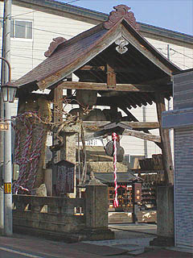
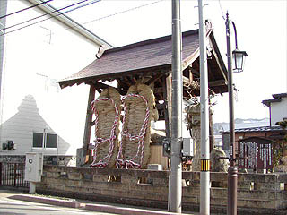
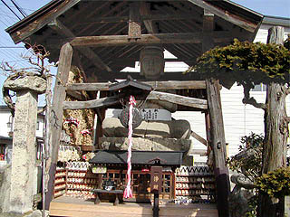
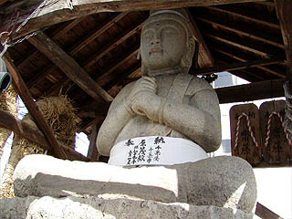
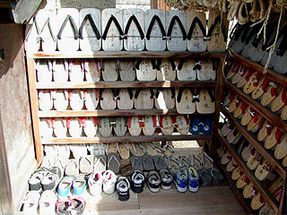
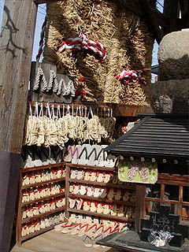
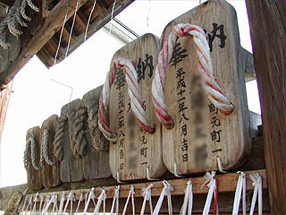
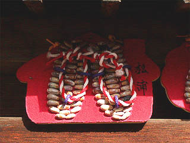
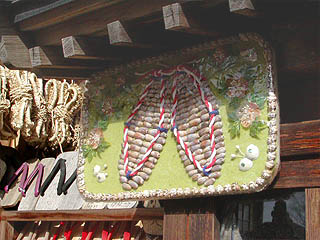
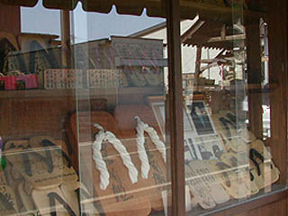

龍寿院/山形県高畠町
犬の宮、猫の宮を見た帰りに偶然見かけた大仏さん。  場所は高畠町のメインストリート。 ちなみにこの通りには昭和博物館と銘打った町おこし系の店鋪＆ミニ博物館がたくさんある。 さて、大仏さんだが、龍寿院という天台宗のお寺の庭先にあり、覆屋が架かっている。 そしてその覆屋の横には何故か巨大なワラジが。  大仏さんは大日如来で石像、高さは5.4メートルである。 石は町内の高安（犬猫の宮があった地区）から産出されたもので、鎌倉時代につくられたものだという。   大仏さんのお腹には腹巻きが巻かれてます。夜、寒いですからね。 説明書きによればこの大日如来、湯殿山参拝の講中が建立したらしい。 もともと湯殿山の本地は大日如来なので、それはそれで結構なのだが、いつのまにか湯殿山信仰の象徴から何故か旅の道中安全の祈願、そして今では足の守護神という事になってしまった。 その辺の経緯が良く判らないのだが、というか何でそんなに意味合いが変わる、大日如来。 ・・・というわけで、今やこの大日さんは足の神様という事になってしまい、たくさんの下駄や草鞋が奉納物として納められている。   中には普通のスニーカーなども奉納されていて、お客さんが沢山来ている家の玄関先みたいな状態になっている。  大きな下駄。普通の下駄が50足はつくれそうな大きさ。ここの大仏さんが履いたら丁度いいサイズかも。   貝殻で作った草鞋絵馬。特に右の絵馬は力作ですなあ。  通りの向かいにある下駄屋さんのショーウィンドウには沢山の奉納下駄が飾られていた。 下駄屋のおじさんの話によると足の神様としては結構有名らしくて、陸上選手などの奉納下駄がたくさんあった。 見れば中央の一番大きな下駄には長嶋茂雄氏のサインが・・・ ミスターが復帰した際にはここの大仏さんのおかげだと思ってください。
2004.4.
珍寺大道場 HOME